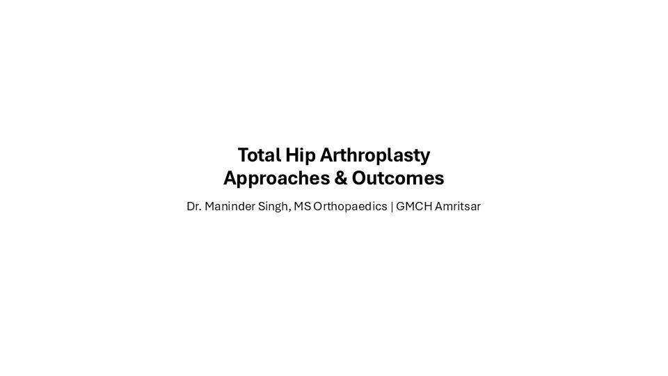
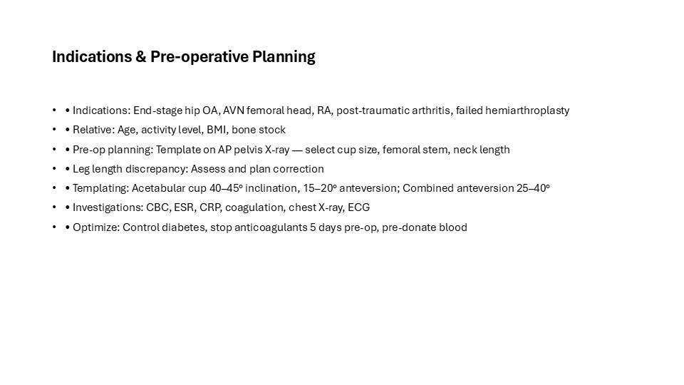
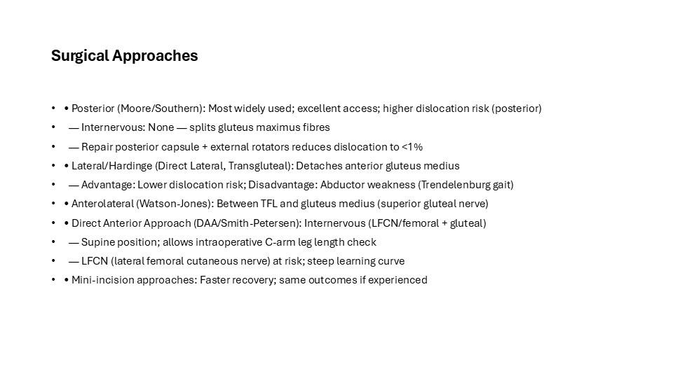
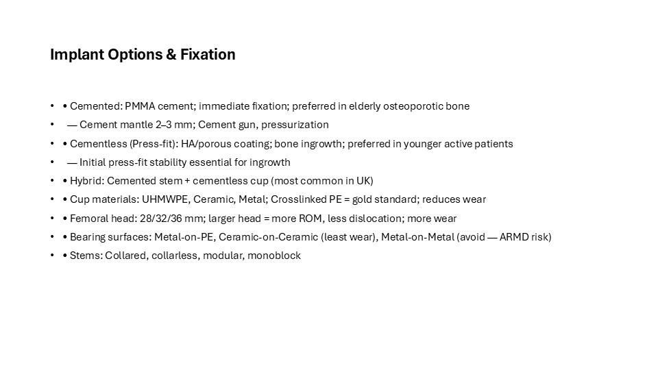
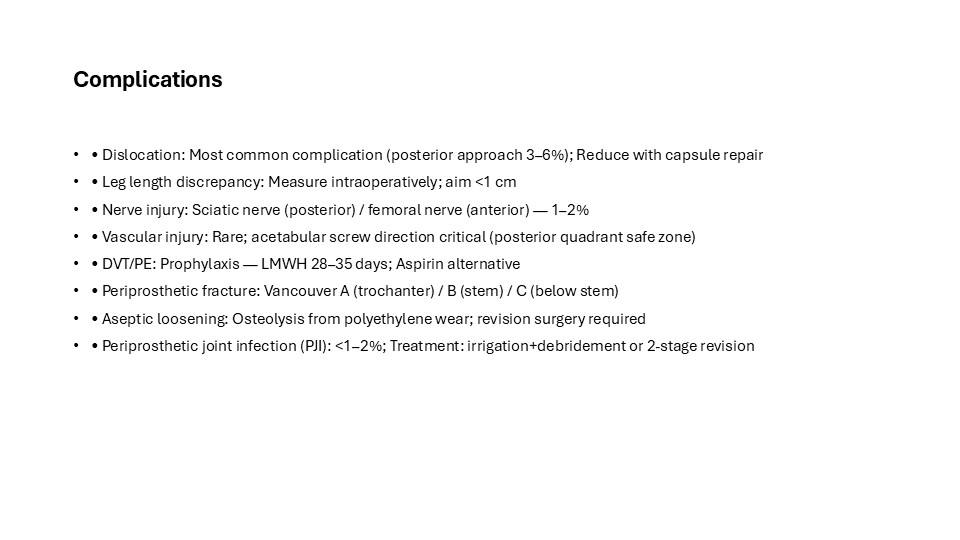
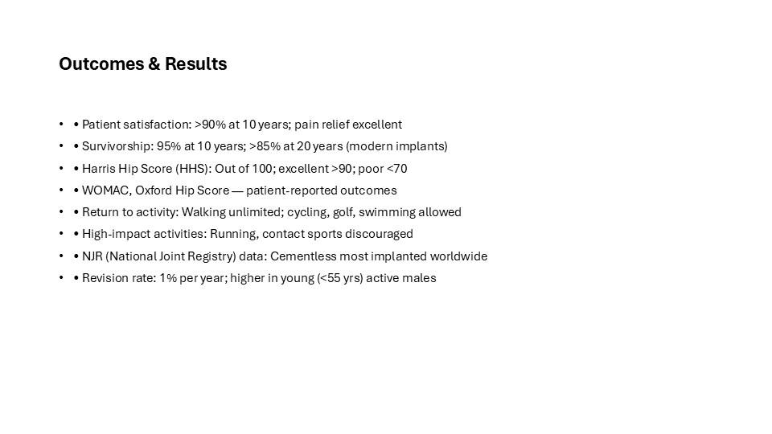
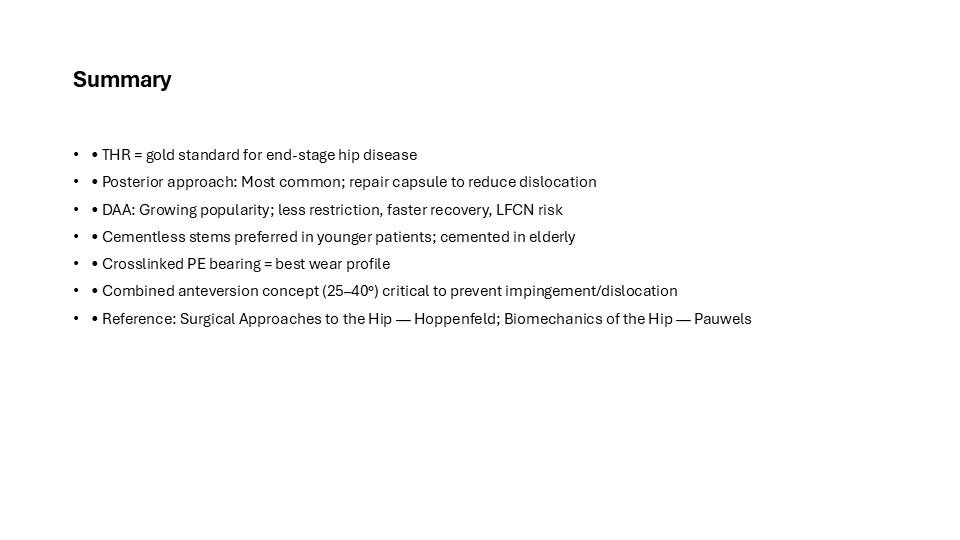

This is the full illustrated version of a teaching presentation prepared by Dr. Maninder Singh (GMCH Amritsar). Every slide is shown below with its text, so you can read it like an article — or download the original PowerPoint (.pptx) to teach from it. Topics covered include: Indications & Pre-operative Planning; Surgical Approaches; Implant Options & Fixation; Complications; Outcomes & Results; Summary.
Contents — jump to a slide (7)

Total Hip Arthroplasty Approaches & Outcomes
Dr. Maninder Singh, MS Orthopaedics | GMCH Amritsar

Indications & Pre-operative Planning
- • Indications: End-stage hip OA, AVN femoral head, RA, post-traumatic arthritis, failed hemiarthroplasty
- • Relative: Age, activity level, BMI, bone stock
- • Pre-op planning: Template on AP pelvis X-ray — select cup size, femoral stem, neck length
- • Leg length discrepancy: Assess and plan correction
- • Templating: Acetabular cup 40–45° inclination, 15–20° anteversion; Combined anteversion 25–40°
- • Investigations: CBC, ESR, CRP, coagulation, chest X-ray, ECG
- • Optimize: Control diabetes, stop anticoagulants 5 days pre-op, pre-donate blood

Surgical Approaches
- • Posterior (Moore/Southern): Most widely used; excellent access; higher dislocation risk (posterior)
- — Internervous: None — splits gluteus maximus fibres
- — Repair posterior capsule + external rotators reduces dislocation to <1%
- • Lateral/Hardinge (Direct Lateral, Transgluteal): Detaches anterior gluteus medius
- — Advantage: Lower dislocation risk; Disadvantage: Abductor weakness (Trendelenburg gait)
- • Anterolateral (Watson-Jones): Between TFL and gluteus medius (superior gluteal nerve)
- • Direct Anterior Approach (DAA/Smith-Petersen): Internervous (LFCN/femoral + gluteal)
- — Supine position; allows intraoperative C-arm leg length check
- — LFCN (lateral femoral cutaneous nerve) at risk; steep learning curve
- • Mini-incision approaches: Faster recovery; same outcomes if experienced

Implant Options & Fixation
- • Cemented: PMMA cement; immediate fixation; preferred in elderly osteoporotic bone
- — Cement mantle 2–3 mm; Cement gun, pressurization
- • Cementless (Press-fit): HA/porous coating; bone ingrowth; preferred in younger active patients
- — Initial press-fit stability essential for ingrowth
- • Hybrid: Cemented stem + cementless cup (most common in UK)
- • Cup materials: UHMWPE, Ceramic, Metal; Crosslinked PE = gold standard; reduces wear
- • Femoral head: 28/32/36 mm; larger head = more ROM, less dislocation; more wear
- • Bearing surfaces: Metal-on-PE, Ceramic-on-Ceramic (least wear), Metal-on-Metal (avoid — ARMD risk)
- • Stems: Collared, collarless, modular, monoblock

Complications
- • Dislocation: Most common complication (posterior approach 3–6%); Reduce with capsule repair
- • Leg length discrepancy: Measure intraoperatively; aim <1 cm
- • Nerve injury: Sciatic nerve (posterior) / femoral nerve (anterior) — 1–2%
- • Vascular injury: Rare; acetabular screw direction critical (posterior quadrant safe zone)
- • DVT/PE: Prophylaxis — LMWH 28–35 days; Aspirin alternative
- • Periprosthetic fracture: Vancouver A (trochanter) / B (stem) / C (below stem)
- • Aseptic loosening: Osteolysis from polyethylene wear; revision surgery required
- • Periprosthetic joint infection (PJI): <1–2%; Treatment: irrigation+debridement or 2-stage revision

Outcomes & Results
- • Patient satisfaction: >90% at 10 years; pain relief excellent
- • Survivorship: 95% at 10 years; >85% at 20 years (modern implants)
- • Harris Hip Score (HHS): Out of 100; excellent >90; poor <70
- • WOMAC, Oxford Hip Score — patient-reported outcomes
- • Return to activity: Walking unlimited; cycling, golf, swimming allowed
- • High-impact activities: Running, contact sports discouraged
- • NJR (National Joint Registry) data: Cementless most implanted worldwide
- • Revision rate: 1% per year; higher in young (<55 yrs) active males

Summary
- • THR = gold standard for end-stage hip disease
- • Posterior approach: Most common; repair capsule to reduce dislocation
- • DAA: Growing popularity; less restriction, faster recovery, LFCN risk
- • Cementless stems preferred in younger patients; cemented in elderly
- • Crosslinked PE bearing = best wear profile
- • Combined anteversion concept (25–40°) critical to prevent impingement/dislocation
- • Reference: Surgical Approaches to the Hip — Hoppenfeld; Biomechanics of the Hip — Pauwels
Use this deck in your teaching
The original editable PowerPoint is free to download for non-commercial teaching, with credit to the author. Questions or corrections? Contact us.
About this deck
Prepared by Dr. Maninder Singh (MS Orthopaedics, Associate Professor, GMCH Amritsar) for postgraduate and clinical teaching. Where images are from open-licence sources (for example Wikimedia Commons), the licence and author appear on the slide. See our editorial policy. Educational use only — not medical advice; see Terms & Medical Disclaimer.